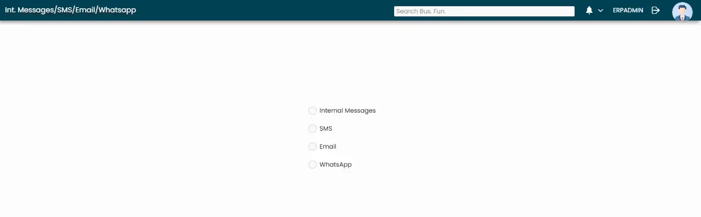
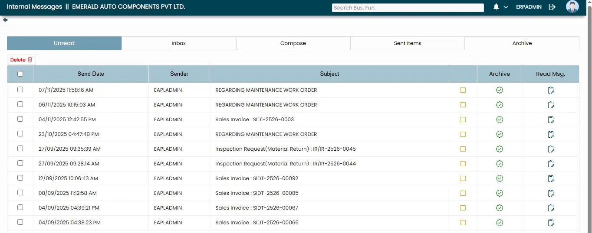

<div data-category="Operating Instructions" data-title="How to view messages" data-updated="December 01, 2025" data-contributors="RoadmapIT" data-breadcrumb="Home,Operating Instructions,How to view messages">
  <div class="page-content">
    <p>This screen explains how to view and manage messages within the application.</p>

    <!-- View Messages -->
    <h2>How to view messages:</h2>
    <ul style="list-style-type: none; align-content: center">
      <li class="mouse-icon">Go to the IM / Mail / SMS / WhatsApp screen.</li>
    </ul>
    
    
    <ul style="list-style-type: none; align-content: center">
      <li class="mouse-icon">All messages can be viewed from this screen.</li>
    </ul>

    <!-- Internal Messages -->
    <h2>Internal Messages:</h2>
    
    <ul style="list-style-type: none; align-content: center">
      <li class="mouse-icon">Internal messages are sent during the approval of workflow documents.</li>
      <li class="mouse-icon">The Inbox contains the following columns:</li>
      <ul class="ms-3 mt-0" style="list-style-type: lower-alpha; align-content: center">
        <li class="ps-0">Sent Date</li>
        <li class="ps-0">Sender</li>
        <li class="ps-0">Subject</li>
      </ul>
      <li class="mouse-icon">Click the Read Msg button to view the full details of the message.</li>
      <li class="mouse-icon">Messages can be archived using the Archive button.</li>
    </ul>
  </div>
</div>
